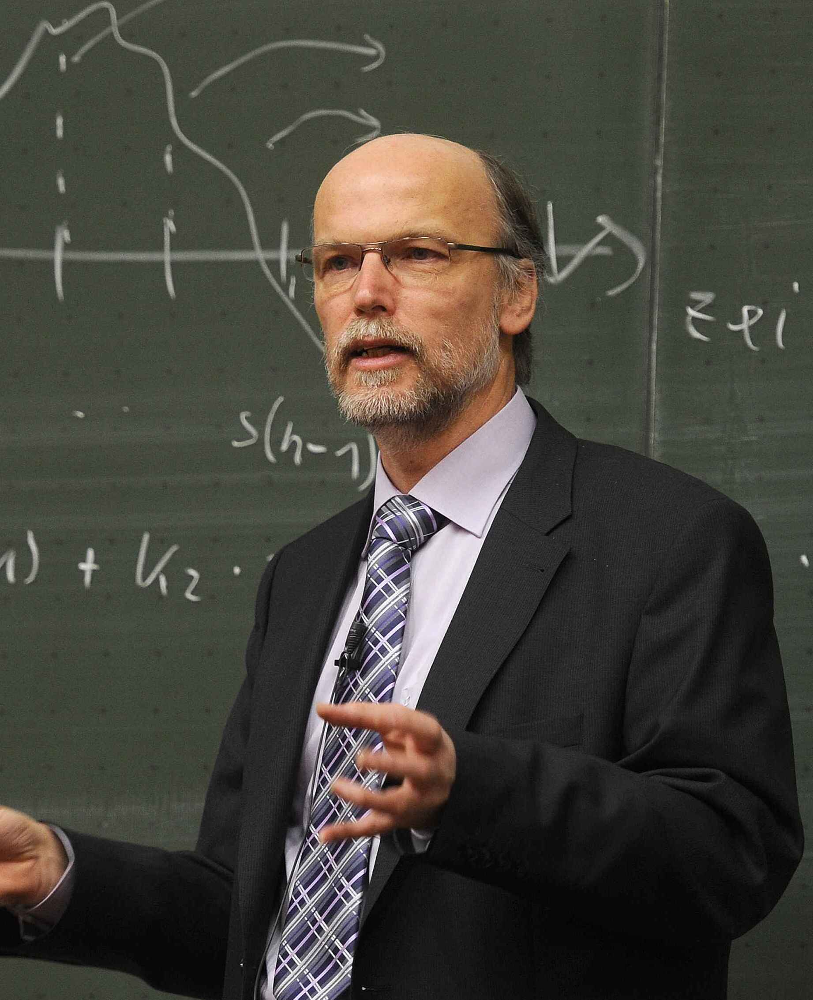

Experimental Catalysis
Investigating anomalous reaction pathways in high-energy compounds.
Alan A. Star personal web site |
||
|  |
Alan A. Star is a distinguished chemist specializing in advanced molecular simulations and high-energy compound synthesis. Known for pushing the boundaries of conventional chemistry, his work focuses on experimental approaches that often intersect with computational modeling and informatics.
Alan graduated from █████████ and currently works at █████████, where he leads cutting-edge research in experimental chemistry and computational molecular modeling. His work focuses on high-energy compounds, anomalous chemical behaviors, and proprietary catalytic systems.
He maintains a private research repository containing encrypted datasets, simulation tools, and experimental results. Due to the sensitive nature of his projects, access is strictly limited to trusted collaborators.
|
|
Contact Info
|
PostsExperimental CatalysisInvestigating anomalous reaction pathways in high-energy compounds. Unexpected Barriers in the ██████ Research SequenceThe research team encountered unexpected barriers in a high-security chemical project, revealing anomalies in their simulation and synthesis pipeline. Encrypted Dataset ReleaseConfidential data files for █████ collaborators only. Base64 encoded. Quantum Reaction ModelingPreliminary results of quantum-level simulations of catalytic ██████ processes. Laboratory NotesObservations from last week's high-pressure chemical experiments. |
Talks
|